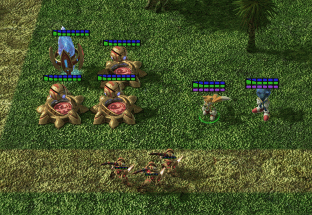

Have you even wanted to see your favorite non-Starcraft character appear in Starcraft 2? Maybe you wanted to make a Pokemon, Sonic the Hedgehog, or Naruto themed map for the Starcraft 2 arcade and don't want to pretend that a a Tal'darim Zealot is Shadow the Hedgehog (for example). With this innovative model conversion technique I developed, now you can do all of those things. "Madness" you say (or perhaps "fanfiction" you say)? This isn't madness or fanfiction, this is modding!
This tutorial is intended for people who have a basic familarity with the Starcraft 2 editor. If you don't have that familarity, Starcraft 2 Mapster is a great place to learn it.
Next: Tools and Programs neededReturn to Index